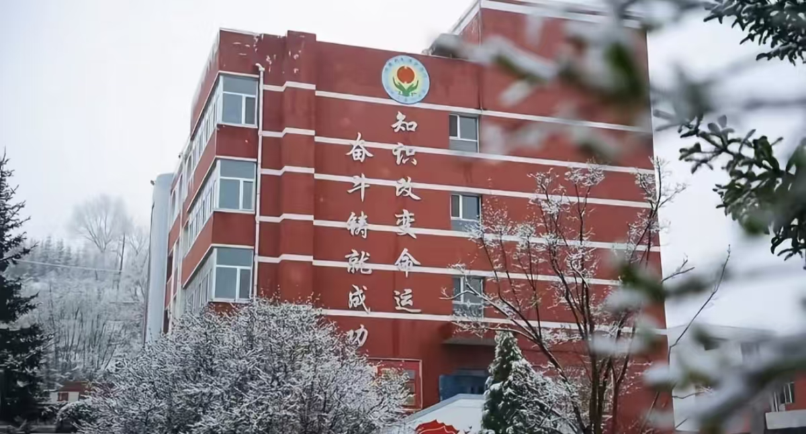
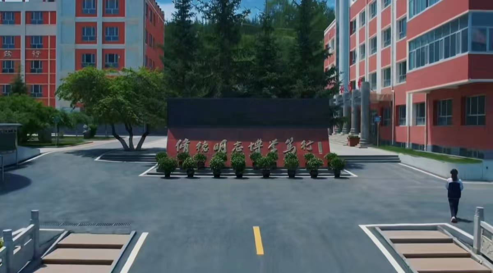
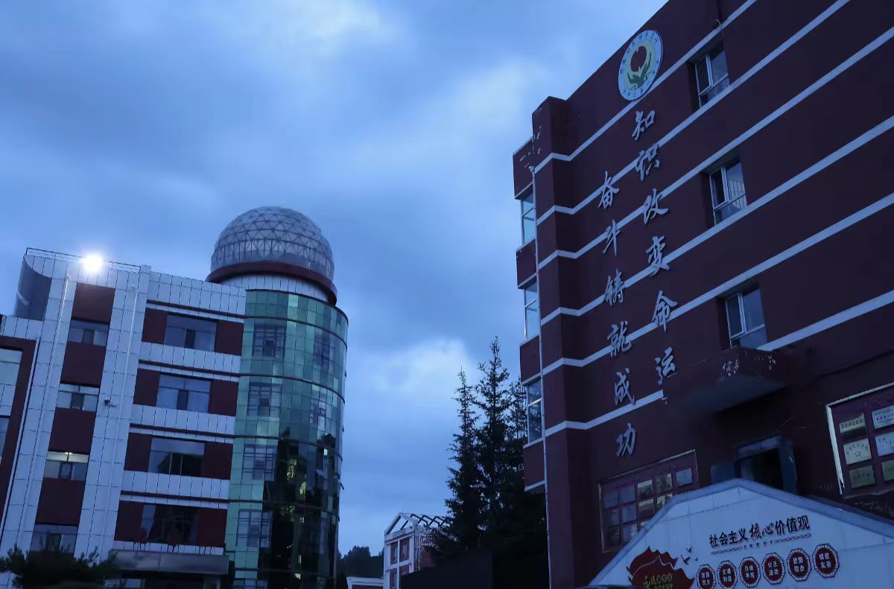
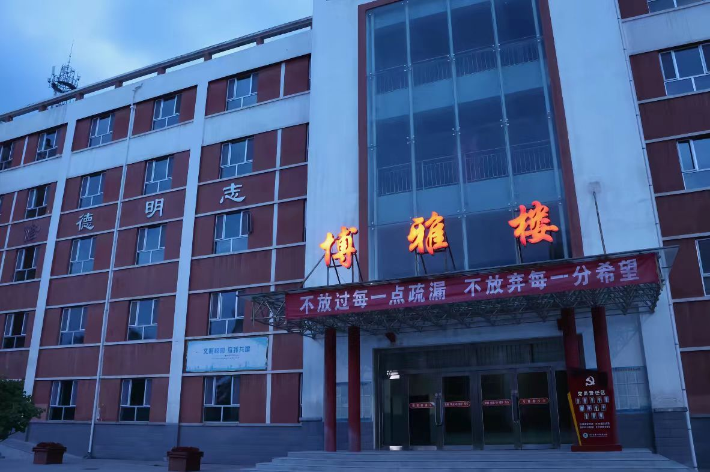
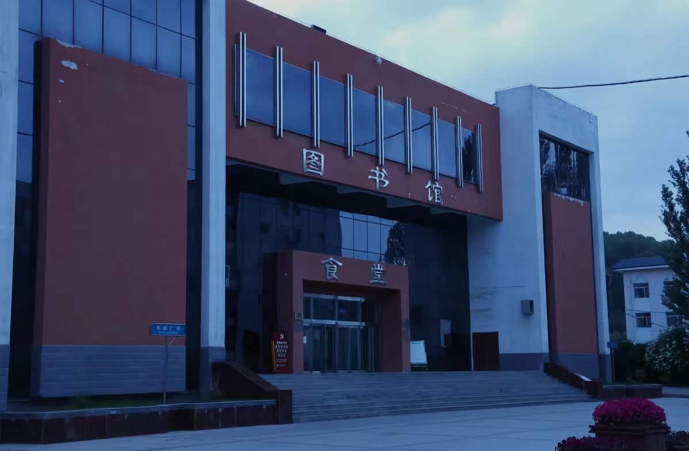
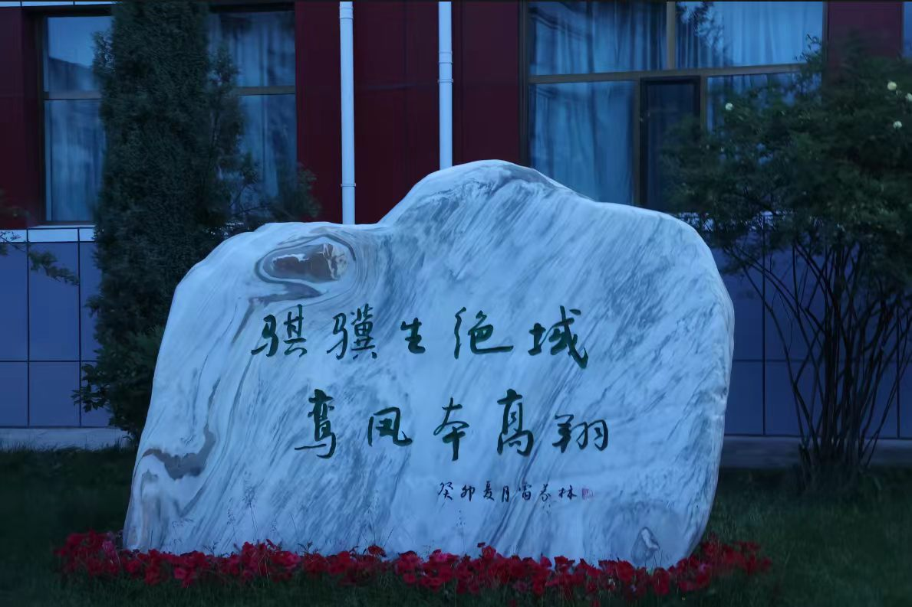
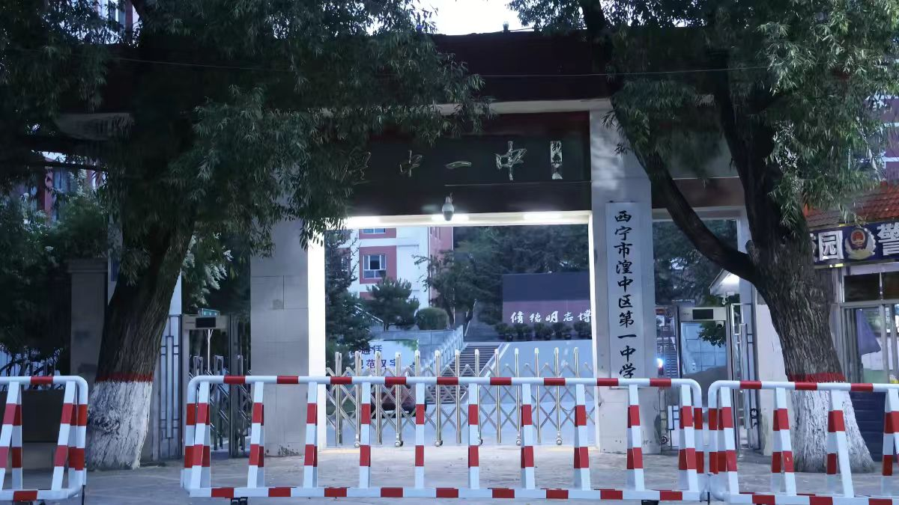
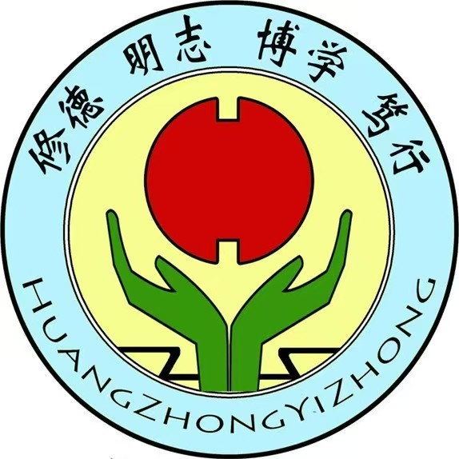
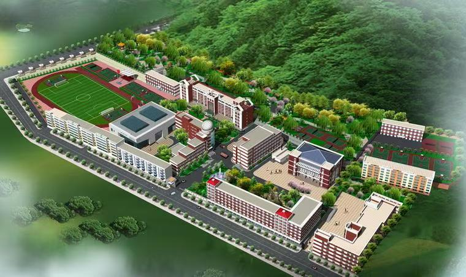
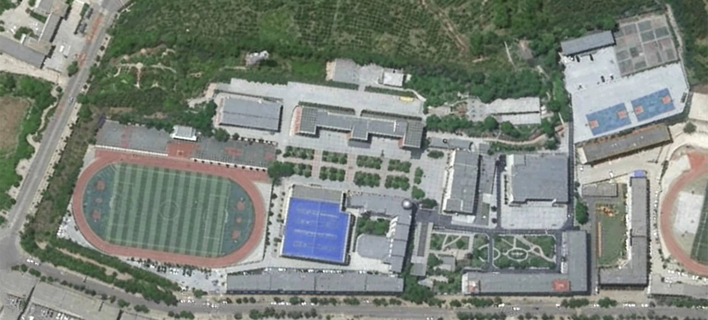

校园照片墙









修德 明志 博学 笃行
姓名：刘玉睿
班级：高二年级(5)班
学号：202505XXX
座右铭：XXXXXXXXXXXXXXX
西宁市湟中区第一中学（简称 "湟中一中"）始建于 1956 年，是青海省重点中学、青海省标准化学校，由西宁市湟中区教育局举办的一所公办完全中学。 学校位于西宁市湟中区鲁沙尔镇和平路 290 号，占地百余亩，校舍建筑面积 4 万余平方米，现有教学班 76 个，学生 4300 余名，教职工近 300 人，师资力量强大。 学校秉持“质量立校，全面育人”办学宗旨，以“精诚团结、精细管理、精致育人、精品办学”为管理理念。









拥有实验楼一幢,内设标准的理化生实验室18个;有总面积达4000多平方米的食堂图书馆综合楼一幢，一二楼为现代化学校食堂，能容纳2000多人同时就餐，三楼为图书馆，馆内藏书超过19.8万册（生均50册），报刊杂志超过250种，可同时容纳350多个学生同时阅读。 综合性体育艺术馆一个、内设篮球馆一个、校史展览馆一个、舞蹈室1个、电子琴教室1个、合唱室1个、美术教室2个、体育活动及器材室1个、健身房1个、多功能报告厅2个，分别能容纳200人、500人；微机室6个,其中电脑180台; 66个教学班和两个教学观察室已全部安装多媒体成套设备；另设校园电视台、演播室、编辑室等功能用房；校园网已初具规模，并通过光纤连接因特网。 特别是近年来学校坚持以“质量立校，全面育人”为办学宗旨，以“一切为了学生的全面发展”为办学理念，以“高质量、现代化、有特色”为目标，逐步形成了“诚、勤、博、实”的校风和“优、苦、严、新”的学风，管理得到加强，环境得到优化，办学条件得到改善，教育质量不断提高。